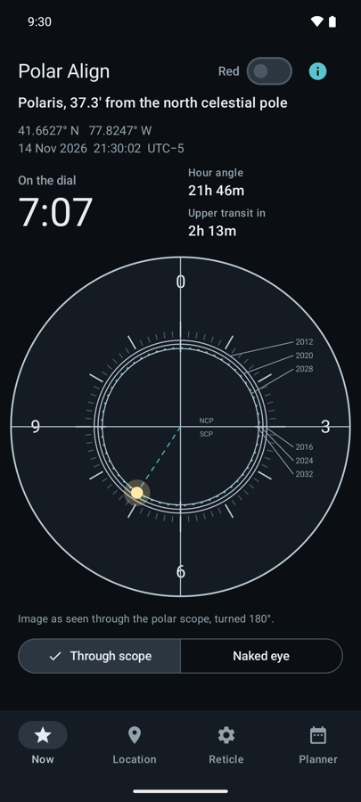
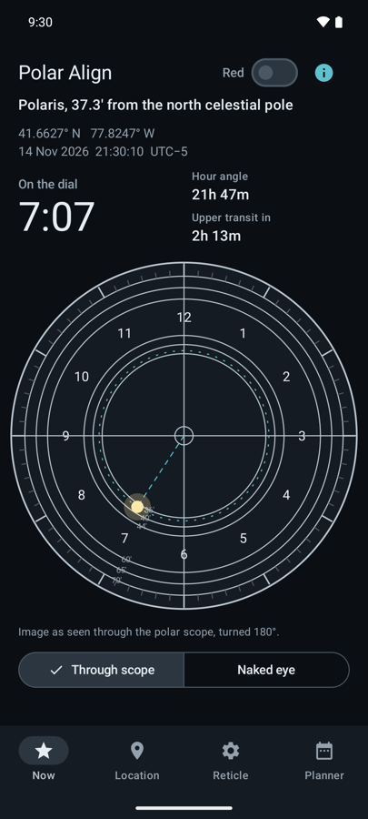

極軸望遠鏡のレチクルの見方
天の北極は、北極星のちょうど上にあるわけではありません。2026年の北極星は天の北極から約37分角の位置にあり、1恒星日（23時間56分）で天の北極のまわりを1周する星です。極軸望遠鏡のレチクルには、中心からこの距離の円が描かれています。その円の上の、今この時刻に合った位置に北極星を入れれば、レチクルの中心、つまり赤道儀の極軸が天の北極を向きます。
時計の何時の方向か
多くのアプリ（このアプリも含めて）は、北極星を入れる位置を時計の読みで表します。「7時07分」なら、円を12時が上の時計の文字盤と見て、7時07分の短針が指す方向が、北極星を入れる位置です。この方向は経度と時刻だけで決まり、1恒星日で1周します。
極軸望遠鏡の像は、小型の屈折式ファインダーと同じく180°回転しています。アプリが極軸望遠鏡で見たときの向きで描いてくれれば、頭の中で反転させずに、見たままを合わせられます。ミラーや天頂プリズムが入る場合は、さらに左右が反転します。
手順
- 赤道儀を水平に置き、緯度目盛りをおおよその緯度に合わせます。
- 極軸をおおよそ北（南半球では南）に向け、極軸望遠鏡の中に北極星を入れます。
- 赤経軸（レチクルだけを回せる機種ではレチクル）を回し、極軸望遠鏡をのぞいたときに12時（0）の目盛りが真上に来るようにします。
- アプリで時計の読みを確認し、赤経軸や赤緯軸ではなく、高度と方位の調整ネジで赤道儀を動かして、北極星をその位置の円の上に入れます。
- ネジを固定し、1分ほどしてからもう一度確認します。数分では読みはほとんど変わりません。
Sky-Watcher のレチクル（EQ6-R、Star Adventurer 2i）

基本は十字線と、上から時計回りに 0、3、6、9 の目盛りです。中心のまわりには2012年、2020年、2028年の北極星の位置を示す3つの円があり、0、3、6、9時の位置に2016年、2024年、2032年の小さな目盛りがあります。歳差運動で北極星は少しずつ天の北極に近づくので、2026年は2020年と2028年の円の間、2028年寄りの位置を使います。
iOptron のレチクル（SkyGuider Pro）

1〜12時の目盛りが10分ごとに刻まれています。内側の36分角、40分角、44分角の円は北極星用、外側の60分角、65分角、70分角の円は南半球のはちぶんぎ座σ星用です。
南半球の場合
南半球には明るい極星がありません。はちぶんぎ座σ星は天の南極から約69分角離れた、5.4等ほどの暗い星なので、暗い空と、南天用のパターンがある極軸望遠鏡があると合わせやすくなります。上の Sky-Watcher のように北極星の円しかないレチクルでは、時計の読みだけで南天の極軸合わせはできません。
読みを計算してくれるアプリ
Polar Align は、観測地と時刻に合わせて、これらのレチクル上の正しい位置に星を描きます。オフラインで動き、赤色の夜間モードがあります。Notchwork の Android アプリです。